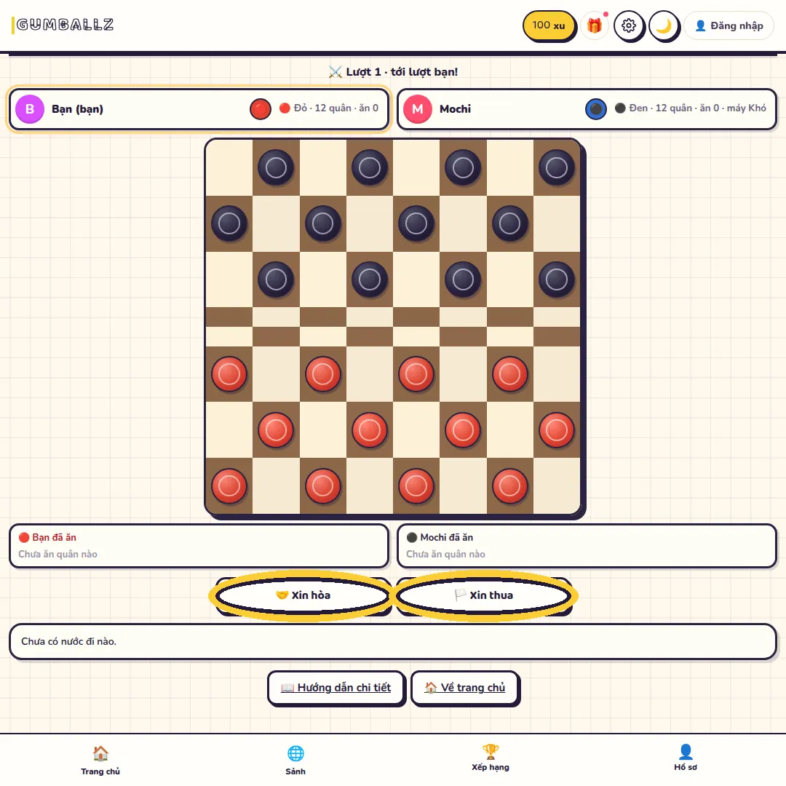

Cờ Đam là trò cờ 2 người trên bàn 8×8: mỗi bên 12 quân, Đỏ đi trước. Quân đi chéo 1 ô, nhảy qua quân địch để ăn — ăn là bắt buộc, ăn được nhiều lần thì phải ăn tiếp. Lên tới hàng cuối thì phong Vua, đi chéo mọi hướng. Ăn hết quân địch hoặc chặn cho địch hết nước đi là thắng!
1. Bàn cờ và quân
- Bàn 8×8, chỉ đi trên ô tối (ô sáng không bao giờ có quân). Mỗi bên 12 quân: Đỏ xếp 3 hàng dưới, Đen xếp 3 hàng trên.
- Đỏ đi trước, đi chéo 1 ô về phía trước (lên trên). Đen đi chéo 1 ô xuống dưới.
- Quân thường là đĩa tròn; quân Vua có thêm 👑 và đi chéo 1 ô mọi hướng (tiến lẫn lùi).
2. Cách đi và ăn quân
- Bấm vào 1 quân của mình để xem các ô đi được: chấm xanh là ô đi thường, viền đỏ là ô ăn được quân địch.
- Ăn quân: nhảy qua 1 quân địch kề chéo sang ô trống ngay phía sau nó — quân bị nhảy qua biến mất khỏi bàn.
- Ăn là BẮT BUỘC: nếu có nước ăn nào thì bạn chỉ được ăn, không được đi thường. Game tô đỏ các quân đang bắt buộc ăn.
- Nhảy nhiều lần: ăn xong mà cùng quân đó còn ăn tiếp được thì phải ăn tiếp trong cùng 1 lượt — lượt chỉ đổi khi không còn nước ăn nào cho quân đó.
3. Phong Vua
- Quân thường lên tới hàng cuối phía địch (Đỏ lên hàng trên cùng, Đen xuống hàng dưới cùng) thì phong Vua ngay 👑.
- Vua đi và ăn chéo 1 ô mọi hướng — mạnh hơn quân thường nhiều.
- Lưu ý: phong Vua thì dừng lượt — dù vừa phong Vua bằng 1 nước ăn thì cũng không được nhảy tiếp trong lượt đó.
4. Thắng thua và hòa
- Thắng khi ăn hết quân địch, hoặc chặn cho địch hết nước đi.
- Hòa: cả 2 cùng bấm 🤝 Xin hòa và đối thủ đồng ý; hoặc 40 nước không ăn quân nào; hoặc lặp lại vị trí 3 lần.
- Đánh bế tắc thì bấm 🏳️ Xin thua để nhận thua ngay.
5. Mẹo chơi
- Đừng dâng quân: quân vừa bước tới mà địch ăn được ngay thì coi như mất không — game cảnh báo bằng viền đỏ ở ô địch có thể ăn.
- Giữ quân ở hàng cuối nhà mình: địch muốn phong Vua phải vượt qua, mà quân giữ nhà còn chặn đường.
- Đổi quân có lợi: ăn 1 quân địch bằng 1 quân mình là hòa, nhưng ăn được Vua địch hoặc ăn 2 quân trong 1 chuỗi nhảy là lời to.
- Vua rất mạnh ở cuối ván: 1 Vua đấu 3 quân thường vẫn có cửa thắng nếu đi khéo.
6. Chế độ chơi
- 🌐 Online: tạo phòng, gửi mã 5 ký tự cho bạn vào chơi cùng. Chủ phòng chọn chơi quân Đỏ, Đen hay ngẫu nhiên, và có thể bật đồng hồ đi (30/60 giây — hết giờ thì game tự đi 1 nước hợp lệ giúp bạn).
- 🤖 Chơi với máy: Máy Dễ đánh ngẫu nhiên có chọn lọc, Máy Khó dùng minimax sâu 5 — đánh chắc tay, không bao giờ thua người chơi thường.
- 👥 2 người chung máy: nhập tên người chơi 2 rồi chuyền máy cho nhau, mỗi người một lượt.